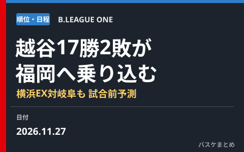

越谷アルファーズ、首位の勢いで福岡へ ONE11/27の2試合を予測

11月27日の19時5分から、B.LEAGUE ONEで2試合が行われます。福岡対越谷と、横浜EX対岐阜です。
この記事では、順位と得点・失点から両カードの見通しを比べます。
【事実】今夜の2試合と各チームの成績
福岡対越谷は、ライジングゼファー福岡のホームです。横浜EX対岐阜は、横浜エクセレンスのホームです。
成績は11月22日終了時点の公式順位です。越谷アルファーズは17勝2敗で、北地区1位です。
勝率はONEの全地区で最も高く、得失点差は+293です。
福岡は8勝10敗で、南地区2位です。熊本に4ゲーム差をつけられています。
横浜EXは12勝6敗で、中地区1位です。岐阜スゥープスは4勝15敗で、中地区5位です。
【分析】福岡対越谷は「1試合平均の得失点差」が大きく違う
公式の通算値から、1試合平均の得点と失点を計算しました。
越谷は約91.9点を取り、約76.5点に抑えています。差は+15.4点です。
福岡は約79.5点を取り、約79.9点を失っています。差は-0.4点です。
越谷は直近5試合で5勝0敗です。アウェー成績も10勝2敗と安定しています。
個人では、越谷のアンソニー・クレモンズ選手がEFF平均22.4です。福岡のキャメロン・オリバー選手は22.9で、数字では並びます。
越谷にはチェイス・フィーラー選手もいます。EFF平均は21.4です。
【予測】福岡対越谷は越谷が有利
予測は、越谷が勝つ可能性が高いです。守備で失点を抑える力の差が大きいからです。
福岡のホームは4勝4敗です。5割を保っており、一方的な展開になるとは限りません。
見るポイントは、福岡が越谷の少ない失点を崩せるかです。軸はオリバー選手の得点です。
【分析】横浜EX対岐阜はホームとアウェーの差が焦点
横浜EXは1試合平均で約92.6点を取り、約84.3点を失っています。差は+8.3点です。
岐阜は約77.7点を取り、約86.5点を失っています。差は-8.8点です。
岐阜のアウェー成績は0勝8敗です。横浜EXはホームで6勝4敗です。
個人では、横浜EXのトレイ・ボイド選手がEFF平均27.3です。岐阜のブレイク・プレストン選手は23.0です。
【予測】横浜EX対岐阜は横浜EXが有利
予測は、横浜EXが勝つ可能性が高いです。岐阜はアウェーで未勝利だからです。
ただし横浜EXは直近5試合で2勝3敗です。連敗中のため、岐阜が接戦に持ち込む余地はあります。
見るポイントは、ボイド選手とプレストン選手の得点の応酬です。岐阜のタイラー・ワイドマン選手もEFF平均18.1で、横浜EXの守備を試します。